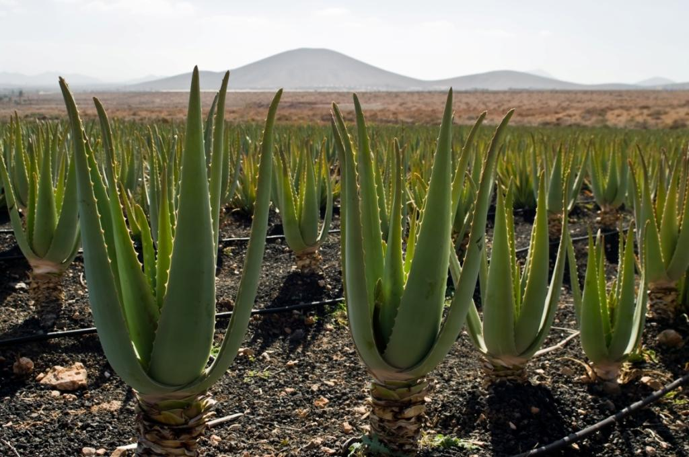

Точное место,в котором было открыто растение, на данном этапе исследования неизвестно. Исходя из того, что данная культура может расти только в условиях теплого климата, ученые склоняются к тому, что родиной могут выступать исключительно теплые страны. Общепринято считать родиной алоэ земли Мадагаскара и Южной Африки.
Первые упоминания о культуре появились за 2000 лет до н.э. Она описана в Библии, исторических летописях. Наскальные рисунки с изображением растения, напоминающего древовидное алоэ, были найдены археологами на раскопках гробниц фараонов Древнего Египта.
В Европу культуру завезли в XVIII веке. Алоэ приняла в подарок супруга генерала Крэйга. Именно она впервые привезла растение из Африки в Великобританию.
На сегодняшний день алоэ в качестве уличного растения можно встретить в следующих местах: